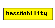

File: Mobility/MassMobility.ned
C++ definition: click here
This is a random mobility model for a mobile host with a mass. It is the one used in "Optimized Smooth Handoffs in Mobile IP" by Perkins & Wang.
"An MH moves within the room according to the following pattern. It moves along a straight line for a certain period of time before it makes a turn. This moving period is a random number, normally distributed with average of 5 seconds and standard deviation of 0.1 second. When it makes a turn, the new direction (angle) in which it will move is a normally distributed random number with average equal to the previous direction and standard deviation of 30 degrees. Its speed is also a normally distributed random number, with a controlled average, ranging from 0.1 to 0.45 (unit/sec), and standard deviation of 0.01 (unit/sec). A new such random number is picked as its speed when it makes a turn. This pattern of mobility is intended to model node movement during which the nodes have momentum, and thus do not start, stop, or turn abruptly. When it hits a wall, it reflects off the wall at the same angle; in our simulated world, there is little other choice."
This implementation can be parameterized a bit more, via the changeInterval, changeAngleBy and changeSpeedBy parameters. The parameters described above correspond to the following settings:
See also: ChannelControl
Author: Emin Ilker Cetinbas, Andras Varga
The following diagram shows usage relationships between modules, networks and channels. Unresolved module (and channel) types are missing from the diagram. Click here to see the full picture.
| Name | Type | Description |
|---|---|---|
| debug | bool | debug switch |
| x | numeric const | start x coordinate (-1 = display string position, or random if it's missing) |
| y | numeric const | start y coordinate (-1 = display string position, or random if it's missing) |
| changeInterval | numeric | frequency of changing speed and angle (can be random) [s] |
| changeAngleBy | numeric | change angle by this much (can be random) [deg] |
| speed | numeric | speed (can be random, updated every changeInterval) [m/s] |
| updateInterval | numeric const | time interval to update the hosts position |
simple MassMobility parameters: debug : bool, // debug switch x: numeric const, // start x coordinate (-1 = display string position, or random if it's missing) y: numeric const, // start y coordinate (-1 = display string position, or random if it's missing) changeInterval: numeric, // frequency of changing speed and angle (can be random) [s] changeAngleBy: numeric, // change angle by this much (can be random) [deg] speed: numeric, // speed (can be random, updated every changeInterval) [m/s] updateInterval : numeric const; // time interval to update the hosts position endsimple